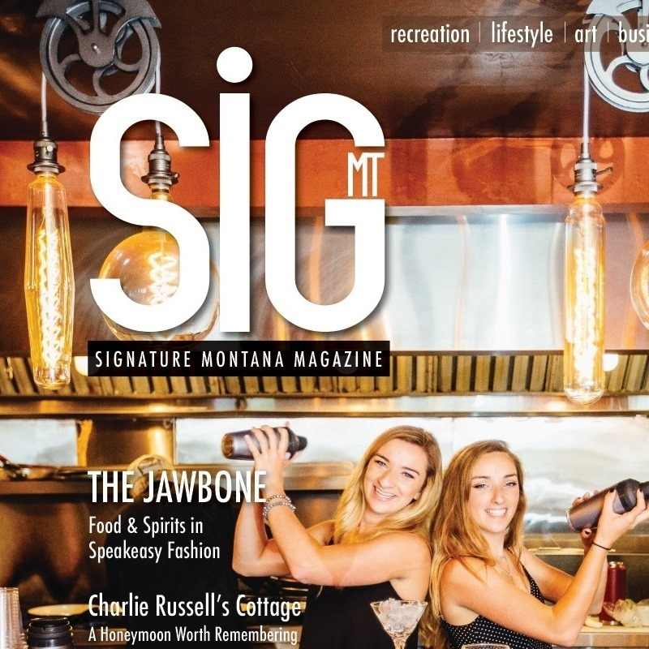

About Us

Twin sisters, Amber and Cassie Coburn, opened up The Jawbone in 2018 when they were 20 years old. They opened up the restaurant while they were going to college at Carroll College. Cassie studied business management and Amber got her degree in Anthrozoology. They studied abroad in Perth, Australia where they came up with the idea to create a speakeasy style restaurant with craft cocktails. Since opening, they have been featured in Signature Montana Magazine (right), Treasure State Lifestyles magazine and the Great Falls Tribune. The Jawbone is an intimate atmosphere with an open kitchen concept. If you are ever in White Sulphur Springs this is a must stop!
History
We found a book about Meagher County history and looked through it. It was full of black and white photos of White Sulphur Springs back in the day. We came across a railroad called The Montana Railroad. We looked into it more and it was nicknamed, "The Jawbone." It was said that the inventor, Richard Harlow, received all the supplies and money for the railroad by wagging his jawbone and convincing people to get involved. It was built through the motivation, diligence and steadfast persistence of Richard Harlow.

Now, when asked where the name comes from, we theorize about the whiskey which must've ridden in on the Jawbone back in the day, prohibition or none. Then, we offer them another Manhattan with their huckleberry brie. History connects us all to our roots, and without the hard work of the people who came before us, what we are building would never have been possible. Our name is a cheer to them and a celebration of the place we live!